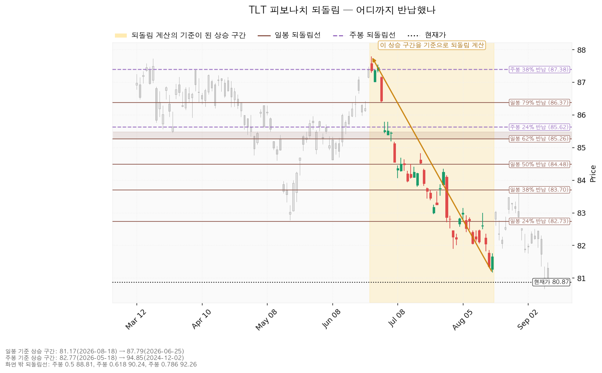
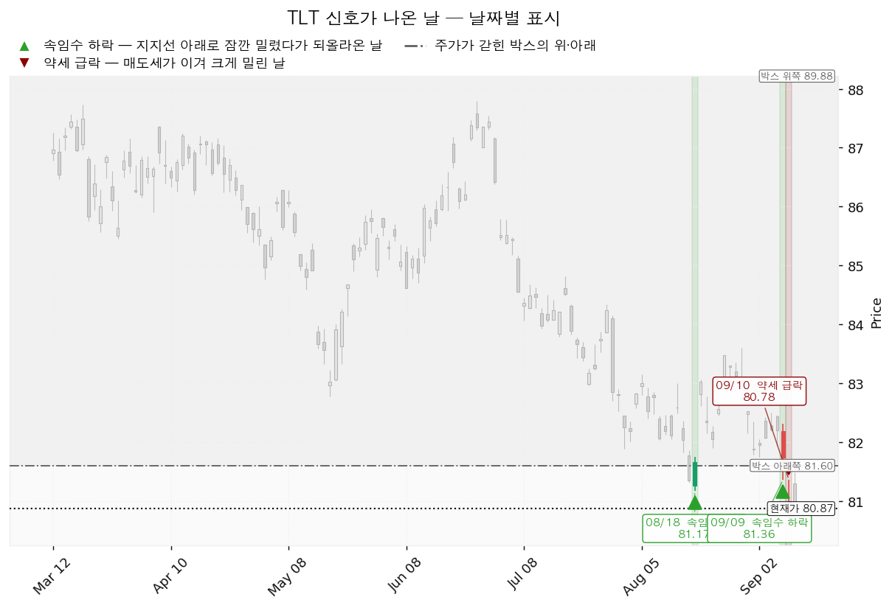
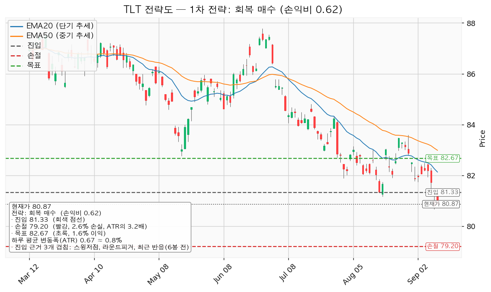
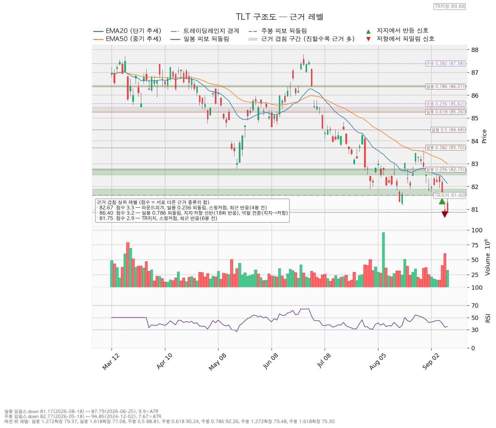

TLT(iShares 20+ Year Treasury Bond ETF)는 잔존만기 20년을 넘는 미국 국채만 담아 운용하는 상장지수펀드이며, 매월 분배금을 지급합니다.
| 구분 | 가격 | 30년 금리 환산 | 판정 방식 | 현재 상태 |
|---|---|---|---|---|
| 회복선 | 82.07달러 | 약 5.28% | 일봉 종가로 회복한 뒤 되돌림에서 지지되는지 | 회복 대기 (현재가 대비 +1.48%) |
| 집행 손절 | 79.20달러 | 약 5.50% | 진입한 경우에만 유효 — 미진입 상태에서는 의미 없음 | 미진입 |
| 관망 종료 기준 | 79.45달러 | 약 5.48% | 79.37~79.50 겹침 구간을 일봉 종가로 이탈 | 미도달 (현재가 대비 -1.76%) |
| 확인선 | 88.79달러 | 약 4.75% | 일봉 종가 돌파 후 되돌림 지지 확인 | 미돌파 (현재가 대비 +9.79%, 하루 평균 변동폭의 11.8배) |
| 폐기선 | 81.60달러 | 약 5.31% | 이탈 후 3거래일 내 회복 실패(또는 그 전에 80.93달러 아래 종가 마감) + 반등에서 저항으로 확인 | 이미 아래에 있음 (현재가 대비 +0.90%, 1.1배) — 회복 여부 확인 필요 |
박스 상단 89.88달러는 확인선 위쪽 맥락으로만 봅니다. 폐기선은 현재가에서 하루 평균 변동폭의 1.1배 거리라 실무상 작동하는 기준입니다. 미진입자가 실제로 볼 선은 관망 종료 기준 79.45달러입니다.
| 항목 | 값 |
|---|---|
| 현재가 | 80.87달러 (2026-09-11 종가, 전일 대비 +0.11%) |
| EMA20 / EMA50 (단기·중기 이동평균) | 82.13 / 82.99달러 — 현재가가 둘 다 아래 |
| RSI(14) (상대강도지수, 0~100. 30 아래를 과매도로 봄) | 35.16 |
| 하루 평균 변동폭(ATR) | 0.6684달러 = 주가의 0.83% |
| 국면 | 하락·중립 — 신규 롱 관망 |
| 횡보 박스 | 지지 81.60 / 저항 89.88달러 (유효) |
박스는 최근 180봉(조회된 전체 일봉 753봉 중)을 보고 판정했습니다. 40봉·90봉·180봉 세 창을 모두 시험한 결과 가격이 박스 안에 머문 비율이 40봉 0.825, 90봉 0.867(유효 판정 실패), 180봉 0.961로 180봉이 가장 좋아 이 창을 골랐습니다. 직전 180봉 구간은 84.09~91.80달러로 지금 박스와 가격대가 겹칩니다 — 위에서 내려온 것도 아래에서 올라온 것도 아니고, 같은 횡보의 연장입니다.
박스 안쪽은 매집이 아니라 분산 쪽으로 기울어 있습니다.
| 지지 테스트 | 저가 | 그날 거래량 (평균 대비) |
|---|---|---|
| 2026-05-19 | 82.77달러 | 1.42배 |
| 2026-08-18 | 81.17달러 | 0.76배 |
| 2026-09-10 | 80.67달러 | 2.00배 |
지지 테스트가 반복될수록 매도 거래량이 늘고 있고(증가 추세), 박스 안 저점은 82.77 → 81.17 → 80.67로 계속 낮아지고 있습니다(절하). 상승봉 대 하락봉 거래량비는 1.05로 거의 균형입니다. 국면 후보는 지지 부근 속임수 하락(spring)을 근거로 "재매집"으로 나왔지만, 박스 내부 판정은 분산 우위입니다. 두 신호가 갈릴 때는 박스 안쪽 거래량과 저점 흐름을 우선합니다. 저는 재분산 쪽으로 봅니다.
TLT 가격은 20~30년 만기 미국 국채 금리가 결정합니다. 금리가 오르면 채권 가격은 내려갑니다. 최근 석 달 흐름은 다음과 같습니다. 아래에서 bp(베이시스포인트)는 0.01%p를 뜻하며, 51bp는 0.51%p입니다.
| 지표 | 2026-06-25 | 최신 | 변화 |
|---|---|---|---|
| 30년 국채 금리(DGS30) | 4.86% | 5.37% (09-10) | +51bp |
| 10년 국채 금리(DGS10) | 4.40% | 4.95% (09-10) | +55bp |
| 10년 실질금리(DFII10) | 2.19% | 2.55% (09-10) | +36bp |
| 10년 기대인플레(T10YIE) | 2.21% | 2.36% (09-11) | +15bp |
| 10년-2년 금리차(T10Y2Y) | 0.31% | 0.33% (09-11) | +2bp |
10년 금리가 오른 55bp 가운데 36bp는 실질금리에서, 15bp는 기대인플레에서 왔습니다. 물가가 다시 튈까 봐 채권이 팔린 것이 아니라, 실질금리와 기간 프리미엄이 오르면서 팔린 것입니다. 10년-2년 금리차는 0.31%에서 0.33%로 2bp 움직이는 데 그쳤습니다 — 장기 금리만 따로 오른 것이 아니라 짧은 쪽과 긴 쪽이 함께 밀려 올라간 모양입니다.
이 구분이 중요한 이유는 대응이 달라지기 때문입니다. 연준이 단기 금리를 내려도 실질금리와 기간 프리미엄이 계속 오르면 TLT는 오르지 않습니다. 9월 16일 FOMC에서 인하가 나와도 30년 금리가 5.37% 위에 머물면 이 셋업은 성립하지 않습니다.
듀레이션은 금리가 1%p 움직일 때 채권 가격이 몇 % 움직이는지를 나타내는 값입니다. 펀드가 공시하는 유효 듀레이션은 이 도구로 조회되지 않습니다. 대신 CLI가 준 날짜별 가격과 FRED 금리로 실측 대응을 계산했습니다.
| 구간 | 시작 | 끝 | 금리 변화 | 가격 변화 | 10bp당 |
|---|---|---|---|---|---|
| A | 2026-06-25 스윙고점 87.79달러 / 4.86% | 2026-09-10 지지테스트 저가 80.67달러 / 5.37% | +51bp | -8.11% | -1.59% |
| B | 2026-07-17 스윙고점 84.82달러 / 5.06% | 2026-09-10 80.67달러 / 5.37% | +31bp | -4.89% | -1.58% |
계산 방법: (끝 가격 ÷ 시작 가격 - 1) ÷ (금리 변화 bp) × 10. 두 구간 모두 금리 10bp당 약 1.6%로 일치했고, 여기서 역산한 내재 듀레이션은 15.8~15.9년입니다(가격 변화율 ÷ 금리 변화율%). 가격은 고가·저가를 쓴 근사치이며 정밀한 펀드 공시치가 아닙니다.
이 환산으로 위 핵심 가격 표의 "30년 금리 환산" 열을 만들었습니다. 기준점은 현재가 80.87달러 ↔ 30년 금리 5.37%이며, 가격은 9월 11일 종가이고 금리는 9월 10일 값이라 하루 차이가 있습니다.
| 구간 | 기준 구간 | 되돌림선 |
|---|---|---|
| 일봉 | 2026-06-25 고점 87.79 → 2026-08-18 저점 81.17 (하락, 하루 변동폭의 9.9배) | 23.6% 82.73 / 38.2% 83.70 / 50% 84.48 / 61.8% 85.26 / 78.6% 86.37 |
| 주봉 | 2024-12-02 고점 94.85 → 2026-05-18 저점 82.77 (하락, 7.67배) | 23.6% 85.62 / 38.2% 87.38 / 50% 88.81 / 61.8% 90.24 / 78.6% 92.26 |
하락 구간을 기준으로 잡았으므로 이 선들은 반등이 막히기 쉬운 자리입니다. 현재가 80.87달러는 일봉 기준 구간의 저점 81.17달러보다도 아래에 있어 되돌림 구간을 벗어났습니다. 아래쪽 확장선은 일봉 1.272배 79.37달러, 주봉 1.272배 79.48달러로 거의 같은 자리에 겹칩니다.

| 날짜 | 신호 | 가격 | 해석 |
|---|---|---|---|
| 2026-08-18 | spring (속임수 하락) | 81.17달러 | 박스 지지 아래로 잠깐 밀렸다 되돌아온 움직임 |
| 2026-09-09 | spring (속임수 하락) | 81.36달러 | 같은 형태가 한 번 더 |
| 2026-09-10 | sow (약세 신호) | 80.78달러 | 바로 다음 날 평균의 2배 거래량으로 무너짐 |
속임수 하락은 원래 매수 근거로 쓰는 신호입니다. 그런데 9월 9일 신호가 나온 바로 다음 날 평균 2배 거래량으로 약세 신호가 나왔습니다. 9월 9일 신호는 되돌아 올라오지 못했으므로 속임수 하락으로 성립하지 않았습니다. 8월 18일 신호 이후에도 저점은 81.17달러에서 80.67달러로 더 낮아졌습니다.

① 상승 전환
② 횡보 지속
③ 시나리오 폐기
산출된 롱 셋업은 하나뿐입니다. 하락·중립 국면이라 되돌림 저가매수는 나오지 않았고, 박스 안쪽이 분산 우위로 판정돼 지지 확인 매수 조건도 채우지 못했습니다.
| 항목 | 내용 |
|---|---|
| 이름 | reclaim_long (회복 확인 매수) — 대표 셋업 |
| 구조 증명도 | 회복 확인형 (가중치 1.0) — 저항을 종가로 회복한 뒤에만 진입 |
| 엣지 학파 | 모멘텀 |
| 전제 | 저항을 종가로 되찾으면 그 방향이 이어진다 |
| 성격 | 자주 틀리고 소수가 크게 맞는 유형. 승률을 기대하는 셋업이 아닙니다(이 유형의 일반적 성격이며 이 분석에서 측정한 값이 아닙니다) |
| 진입 | 81.33달러 — 근거 2.3점 겹침: 스윙저점 + 라운드피겨 + 최근 반응(6봉 전). 구간 81.17~81.50 |
| 손절 | 79.20달러 — 근거 겹침 구간(79.37~79.50, 3.1점) 바로 아래 |
| 목표 | 82.67달러 — 근거 3.3점 겹침: 라운드피겨 + 일봉 23.6% 되돌림 + 스윙저점 + 최근 반응(4봉 전). 구간 82.50~82.77 |
| 손익비 | 1:0.62 (손절 폭 3.19 ATR = 2.13달러 = 진입가의 2.62%) |
| 구조적 손절 기준 손익비 | 1:0.62 — 같은 값 |
| 청산 규칙 | 목표에서 전량 청산. 트레일링 없음 |
| 산출 메모 | 비매력/보류 |
| 판정 | 패스 (손익비 1 미만) |
대표 셋업 선정 사유는 다음과 같습니다. "손익비 0.62 × 구조 증명도(회복 확인형) × 근거 겹침 2.3점으로 선정. 저항을 종가로 회복한 뒤에만 진입한다 — 진입가는 불리하나 구조가 먼저 증명된다." 후보가 하나뿐이라 손익비 1등과 대표 셋업이 갈리는 상황은 없었습니다. 현재가 추격 비권장에는 해당하지 않습니다 — 진입가 81.33달러가 현재가보다 위에 있어 회복을 기다리는 구조이기 때문입니다.
손절 위치를 짚어 둡니다. 손절은 79.37~79.50달러 겹침 구간 안쪽이 아니라 그 아래 79.20달러에 놓였습니다. 겹침 구간 안에 손절을 두면 지지가 작동하는 중에 잘리기 때문입니다. 그 대신 손절 폭이 넓어져 손익비가 낮아졌습니다 — 이 0.62는 손절을 밀어낸 결과이며, 구간 안쪽 손절을 인용해 숫자를 좋게 보이게 하지 않았습니다.
집행 규칙은 이렇게 정해져 있습니다. "진입 근거는 모멘텀이지만 집행은 레인지 규칙을 따른다 — 손절은 구조 아래, 목표 82.67에서 전량 청산이며 트레일링은 걸지 않는다. 돌파 이후 구간은 이 포지션의 연장이 아니라 새 셋업으로 다시 잡는다."

T1 81.75달러에서 50% 익절 → 잔여분 손절을 진입가 81.33달러(본전)로 이동 → T2 82.67달러에서 나머지 50% 청산. 전 구간 손익비 1:0.41, T1 체결 후 본전 스탑으로 밀렸을 때의 하한 손익비 1:0.10. T1까지의 손익비는 1:0.19입니다.
진입에서 목표까지가 하루 평균 변동폭의 2.00배로 트레일링을 걸 만한 폭이 아닙니다(이 2배 기준은 관행이지 정설은 아닙니다). 목표에서 전량 청산으로 끝냅니다.
1회 매매에서 계좌의 1%를 잃는 것을 한도로 하면 손절 폭 2.62%에 대해 계좌의 38.1%를 사야 합니다. 한 종목에 계좌의 13%를 넘게 싣지 않는 원칙에 따라 13%로 제한합니다. 이 경우 손절 시 계좌 손실은 약 0.34%입니다. 다만 손익비가 1 미만이라 진입 자체를 하지 않는 것이 이 리포트의 결론입니다.
하루 평균 변동폭이 주가의 0.83%로 주가의 8%를 밑돕니다. 손절 폭 2.62%는 하루 변동폭의 3.19배라 일상적인 흔들림에 잘릴 자리가 아닙니다 — 손절 위치 자체는 도구로서 문제가 없습니다. 손절 폭 2.62%를 감수하고 얻는 목표 폭은 하루 변동폭의 2.00배(1.65%)뿐입니다.
배당수익률은 이 도구의 조회 결과에 담겨 있지 않습니다. 값을 지어내지 않고, 대신 상한 근사치로 30년 국채 금리 5.37%를 씁니다 — 20년 초과 국채 포트폴리오의 분배금은 과거에 발행된 낮은 표면금리 채권을 함께 담고 있어 현행 시장금리보다 낮은 것이 보통이므로, 5.37%는 실제보다 높게 잡은 값입니다.
| 항목 | 값 |
|---|---|
| 연 분배수익률 상한 근사 | 5.37% |
| 4주 보유 시 환산 | 5.37% × (4÷52) = +0.41% |
| 셋업 손절 폭 | -2.62% |
| 셋업 목표 폭 | +1.65% |
| 월 1회 분배 기준 1회분 | 5.37% ÷ 12 = 약 0.45% |
4주 보유에서 받는 분배금 0.41%는 목표 폭 1.65%의 4분의 1 크기입니다. 작지 않아 보이지만 손익비를 개선하지 못합니다. 배당락일에 가격이 분배금만큼 그대로 빠지기 때문입니다 — 0.45%를 받는 대신 가격이 0.45% 낮아지므로 총수익 관점에서 중립이고, 오히려 목표가 82.67달러에 닿기가 그만큼 어려워집니다. 손익비 1:0.62는 분배금을 넣어도 그대로입니다.
TLT는 월 분배 종목이므로 수 주(4~6주) 보유 구간에 배당락일이 1~2회 옵니다. 정확한 배당락 일정은 이 도구로 조회되지 않으므로 매수 전에 직접 확인하십시오. 분배금은 이 셋업의 진입 근거가 되지 못합니다.
| 가격 | 겹침 점수 | 근거 |
|---|---|---|
| 88.79달러 | 3.7 | 지지·저항 선반(20회 반응) + 역할 전환(지지→저항) + 주봉 50% 되돌림 |
| 89.88달러 | 3.4 | 박스 저항 + 선반(21회 반응) + 역할 전환(지지→저항) |
| 82.67달러 | 3.3 | 라운드피겨 + 일봉 23.6% 되돌림 + 스윙저점 + 최근 반응(4봉 전) ← 셋업 목표 |
| 86.40달러 | 3.2 | 일봉 78.6% 되돌림 + 선반(18회 반응) + 역할 전환(지지→저항) |
| 79.45달러 | 3.1 | 일봉 1.272배 확장 + 주봉 1.272배 확장 + 라운드피겨 ← 아래쪽 첫 방어선 |
| 81.75달러 | 2.9 | 박스 지지 + 스윙저점 + 최근 반응(6봉 전) |
| 82.07달러 | 2.1 | 라운드피겨 + EMA20 + 최근 반응(6봉 전) ← 회복선 |
| 81.34달러 | 2.3 | 스윙저점 + 라운드피겨 + 최근 반응(6봉 전) ← 셋업 진입 |
88.79·89.88·86.40달러는 모두 역할 전환 자리입니다 — 예전에 지지였다가 무너진 뒤 저항으로 바뀐 가격대이며, 반등이 그 자리에서 막히기 쉽습니다. 아래쪽으로는 79.37~79.50달러 겹침 구간이 첫 방어선이고, 그 아래로는 주봉 1.618배 확장 75.30달러까지 점수 1.5점을 넘는 근거가 없습니다.

종목 분석 과정에서 재무제표 조회가 두 차례 실패했습니다("TLT에 대한 펀더멘털 데이터를 찾을 수 없음"). 상장지수펀드에는 기업 재무제표가 존재하지 않아 나온 결과이며, 이 실패분을 추정치로 메우지 않았습니다.
TLT는 미국 국채만 담는 상장지수펀드입니다. 개별 기업 기준의 교차검증 항목은 다음과 같이 처리했습니다.
| 항목 | 조회 결과 | 처리 |
|---|---|---|
| 목표주가(평균·최저·최고·애널리스트 수) | 전부 조회되지 않음 | 국채 ETF라 애널리스트 목표주가가 존재하지 않습니다 |
| 추천등급 | 조회되지 않음 | 해당 없음 |
| 후행 PER / 선행 PER | 후행 없음, 선행 -4043.5 | 국채 펀드에 이익 개념이 없어 나온 무의미한 값입니다. 밸류에이션 판단에 쓰지 않습니다 |
| EPS 추정치·추정치 변화 | 비어 있음 | 해당 없음 |
| 현금흐름(영업·잉여·설비투자) | 조회되지 않음 | 해당 없음 |
| 상승 여력 분해(이익 증가 대 배수 확장) | 해당 없음 | 국채 ETF의 상승 여력은 전적으로 금리 하락에서 나옵니다. 목표 82.67달러의 상승분 +2.23%는 30년 금리가 5.37%에서 5.23%로 14bp 내리는 데서 전부 나오며, 이익이나 배수와 무관합니다 |
| 주도주 여부 | 해당 없음 | 개별 종목이 아니라 자산군입니다. 다만 장기 국채는 현재 주식 대비 강세 자산군이 아닙니다 — 30년 금리가 석 달간 51bp 오르는 동안 가격이 계속 밀렸습니다 |
아래는 CLI에서 수치가 나오지 않는 대목이라 정성적 서술입니다. 추측 수치를 만들지 않았습니다.
장기 국채 가격은 연준의 단기 금리 결정만으로 정해지지 않습니다. 20~30년 구간에는 기간 프리미엄(장기간 돈이 묶이는 것을 감수하는 대가로 투자자가 추가로 요구하는 금리)이 별도로 얹히며, 이는 국채 발행 물량과 재정적자 규모, 그리고 그 물량을 받아 줄 수요(해외 중앙은행·연기금·은행)의 함수입니다. 위 금리 표에서 10년 금리 상승분 55bp 중 36bp가 실질금리에서 왔다는 사실은 이 요인이 작동하고 있음을 시사합니다 — 기대인플레는 15bp만 올랐기 때문입니다. 연준이 9월 16일에 인하하더라도 장기물 공급 부담이 그대로면 곡선의 긴 쪽은 따로 움직일 수 있고, 그 경우 TLT는 인하에도 오르지 않습니다. 단기 금리 인하만을 근거로 TLT를 사는 논리는 이 요인을 설명하지 못합니다.
이 종목에는 실적 발표일이 없습니다. 대신 금리를 움직이는 날짜 있는 이벤트를 확인 항목으로 씁니다.
| 날짜 | 이벤트 | 볼 것 |
|---|---|---|
| 2026-09-16 | FOMC 금리 결정 | 결정 자체보다 발표 후 30년 금리 종가. 인하가 나와도 5.37% 위에 머물면 곡선의 긴 쪽이 따로 움직인다는 뜻이며 이 셋업의 전제가 깨집니다 |
| 2026-09-17 | 주간 신규 실업수당 청구 | 노동시장 둔화 신호가 나오면 금리 하락 요인 |
| 2026-09-24 | 주간 신규 실업수당 청구 | 위와 같음 |
| 2026-09-30 | PCE 물가지수 / GDP | 기대인플레(현재 2.36%)가 위로 튀는지. 튀면 장기 금리 상승 |
| 2026-10-01 | 주간 신규 실업수당 청구 | 위와 같음 |
| 2026-10-02 | 비농업 고용 / 실업률 | 금리 방향을 가장 크게 흔드는 지표 |
| 2026-10-08 | 주간 신규 실업수당 청구 | 위와 같음 |
| 2026-10-14 | 소비자물가지수(CPI) | 기대인플레 2.36%의 검증 |
| 2026-10-15 / 10-22 | 주간 신규 실업수당 청구 | 위와 같음 |
| 2026-10-28 | FOMC 금리 결정 | 30년 금리 종가 재확인 |
| 2026-10-29 | PCE 물가지수 / GDP | 위와 같음 |
국채 입찰 일정은 이 도구의 조회 대상에 포함되지 않아 표에 넣지 못했습니다. 20년·30년물 입찰 결과(응찰률·꼬리)는 장기 금리에 직접 영향을 주므로 별도로 확인하시기 바랍니다.